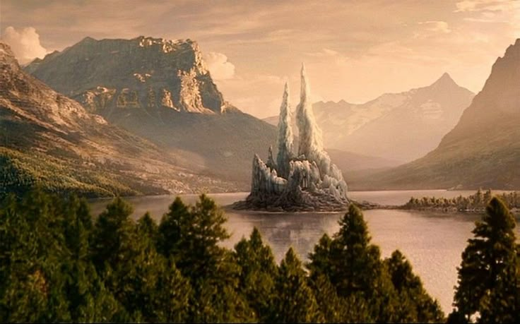
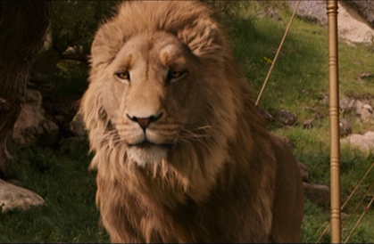

THE CHRONICLES OF NARNIA
The Chronicles of Narnia is a fantasy film series based on the classic novels by C.S. Lewis. The first and most famous movie adaptation, *The Lion, the Witch and the Wardrobe*, was released in 2005 and tells the story of four siblings who enter a magical world through a wardrobe and join a battle between good and evil led by the majestic lion Aslan.
The Chronicles of Narnia is a breathtaking journey into a world of mythical creatures, epic battles, and timeless moral lessons...
 Based on the beloved book series, the film adaptation brings the magical land of Narnia to life with stunning visual effects, imaginative creature design, and an emotional storyline. The story follows Peter, Susan, Edmund, and Lucy Pevensie as they discover a portal to Narnia hidden inside a wardrobe while staying at a country estate during World War II.
“Once a king or queen of Narnia, always a king or queen.”
— Professor Kirke
In Narnia, the children learn that they are destined to fulfill an ancient prophecy: to end the reign of terror imposed by the White Witch Jadis, played by Tilda Swinton. With the help of Aslan, the wise lion and symbolic ruler of Narnia, the Pevensies lead an army to restore peace and freedom to the land.
 The film was praised for its visual creativity, storytelling, and strong performances from young actors such as Georgie Henley and Skandar Keynes. It also features groundbreaking CGI characters like fauns, centaurs, and talking beasts — all created with meticulous detail.
“All shall be restored.”
— Aslan
The Chronicles of Narnia franchise includes two more films: *Prince Caspian* (2008) and *The Voyage of the Dawn Treader* (2010). Though later adaptations were put on hold, the legacy of Narnia remains strong among fans of fantasy and British cinema alike.
Main Cast
Georgie Henley
Lucy Pevensie
Skandar Keynes
Edmund Pevensie
William Moseley
Peter Pevensie
Anna Popplewell
Susan Pevensie
Tilda Swinton
Jadis / White Witch
Liam Neeson
Voice of Aslan